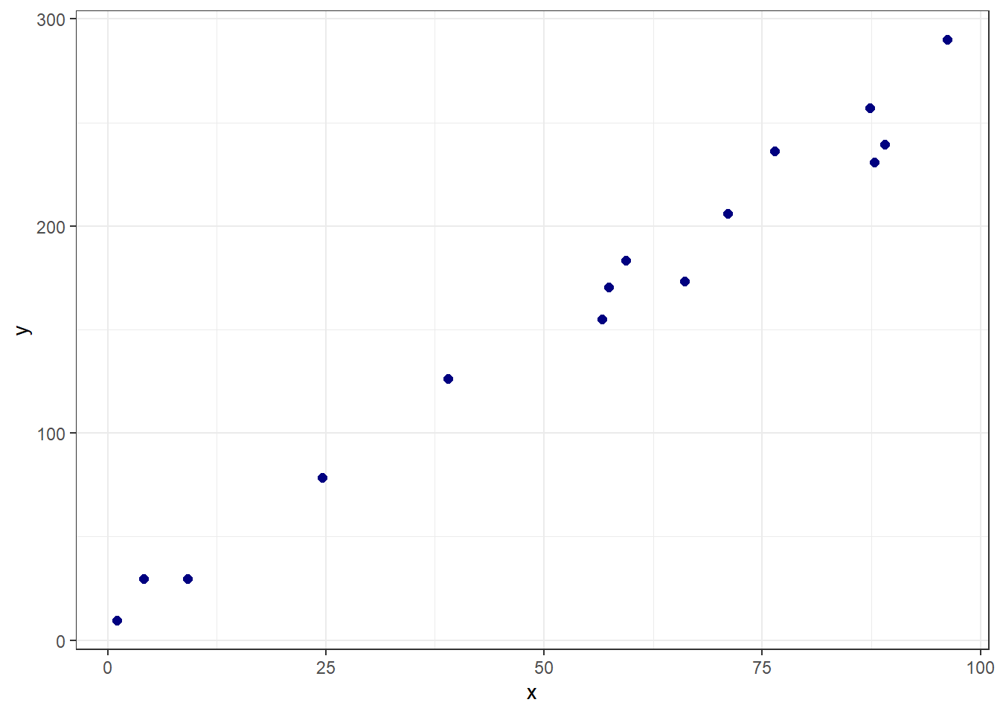
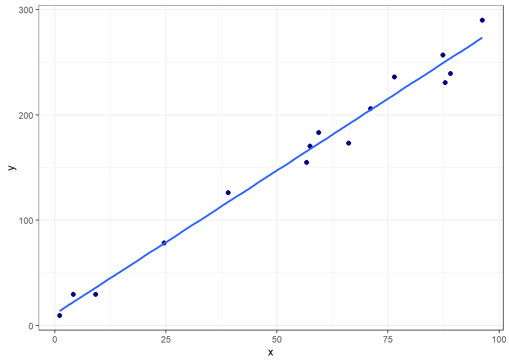
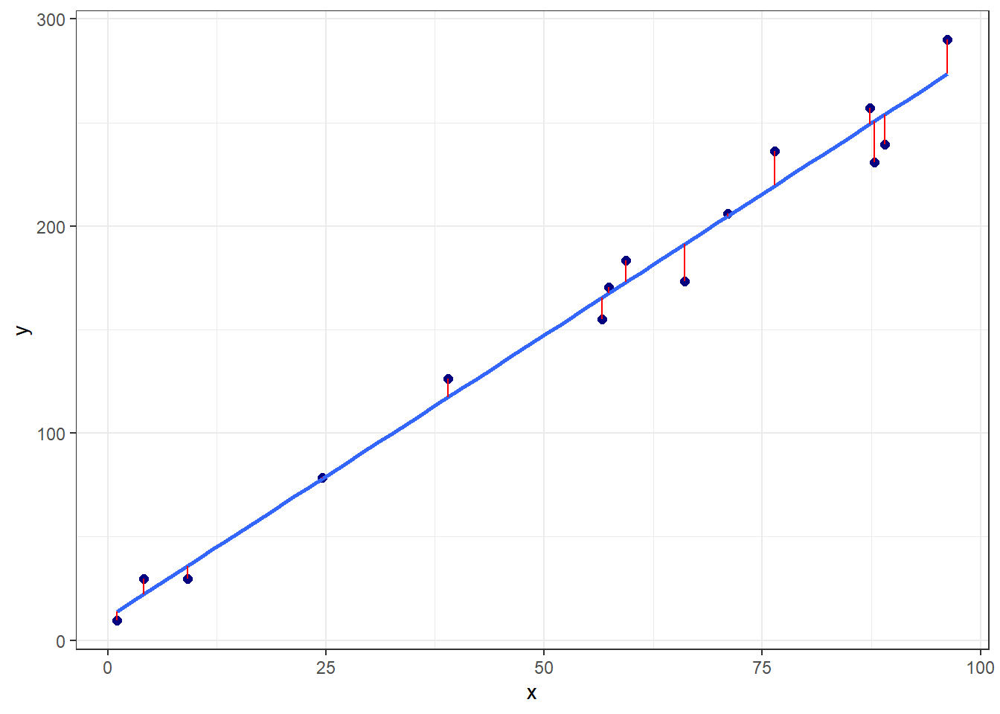
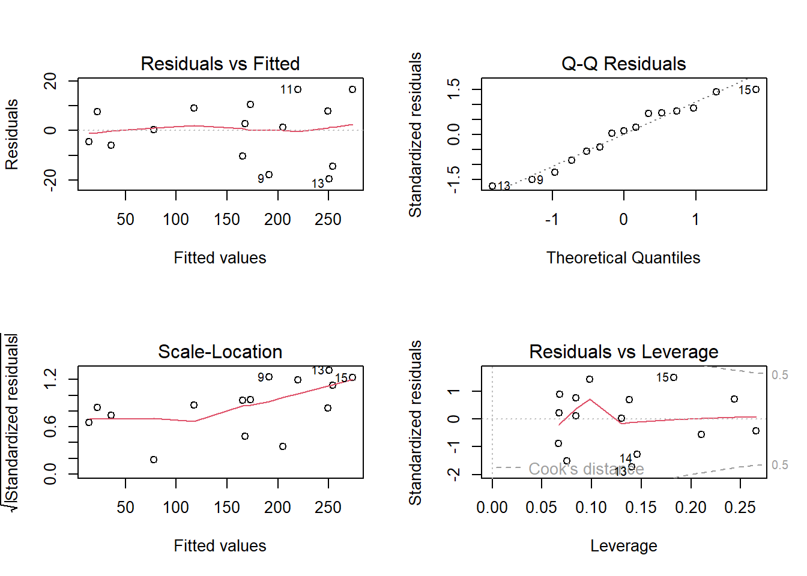
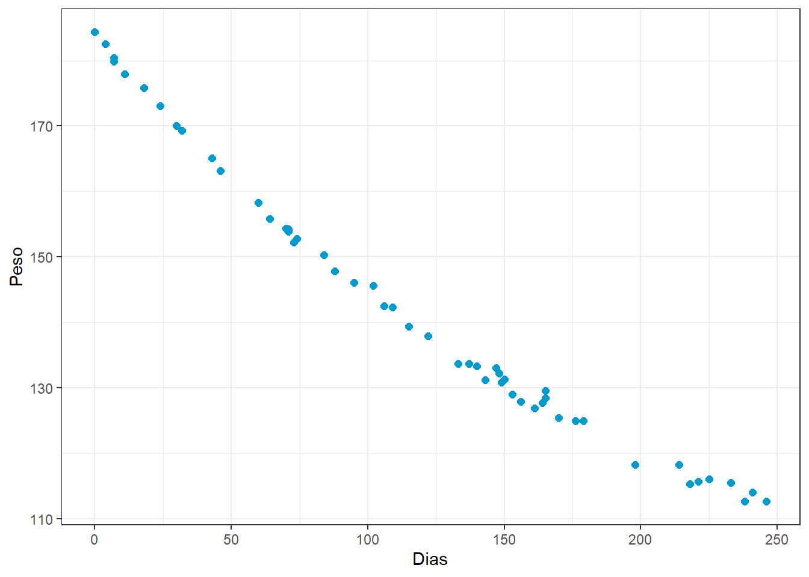
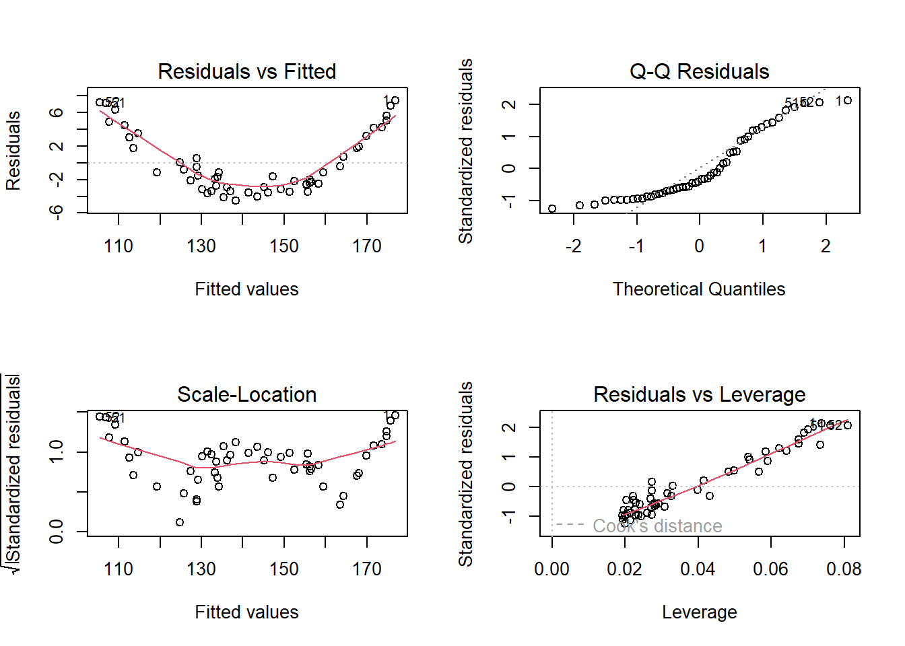
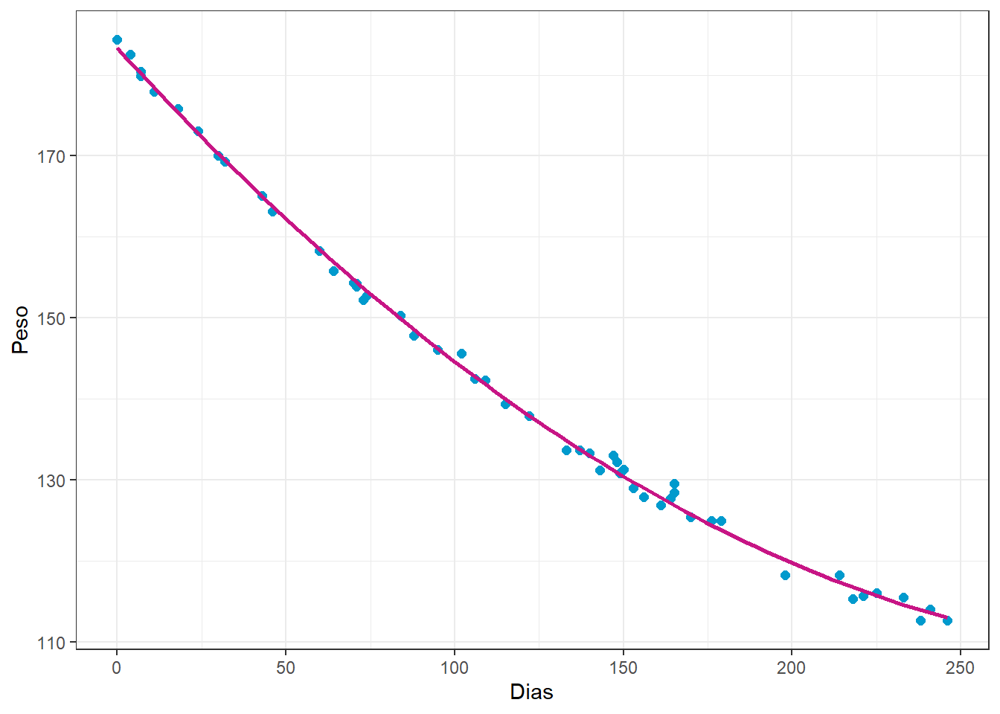
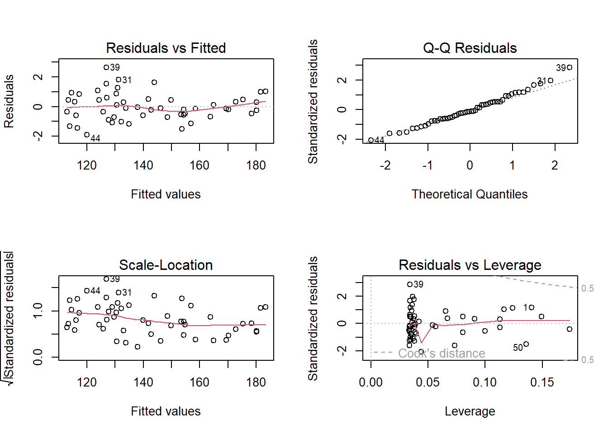

Regressão linear simples, múltipla e polinomial
Regressão linear simples, múltipla e polinomial
Regressão linear simples
Seja um problema onde deseja-se prever uma resposta contínua, \(y \in \mathbb{R}\), em função de uma única variável independente também contínua, \(x \in \mathbb{R}\). Conforme observado graficamente abaixo, pode-se considerar em diversos casos a aproximação de uma função linear para tal relação.
Tal aproximação pode ser descrita pela Equação à seguir, onde \(\hat{y}\) consiste no valor predito de \(y\), \(\beta_0\) e \(\beta_1\) são coeficientes chamados de intercepto ou constante e coeficiente linear ou inclinação, respectivamente. Enquanto \(\beta_0\) mede o valor da resposta prevista para \(x=0\), \(\beta_1\) consiste na mudança média da resposta para o incremento de uma unidade de \(x\).
\[ \hat{y} = \beta_0 + \beta_1x \]
A seguir pode-se observar para os dados plotados anteriormente a linha azul do modelo de regressão linear simples obtido.

Para este caso inicial os coeficientes de regressão estimados são:
(Intercept) x
10.927762 2.728817 A primeira pergunta a ser feita seria como estimar tais coeficientes de regressão. Pode-se pensar em estimativas que minimizem o erro de previsão. Conforme, plotado a seguir em linhas verticais vermelhas, o erro de previsão seria a diferença entre o valor experimental e o previsto, \(\varepsilon_i = y_i - \hat{y}_i\), \(i = 1, ...., N\).

Neste sentido, as observações da variável dependente ou resposta podem ser descritas conforme segue.
\[ \begin{aligned} y_i = \hat{y}_i + \varepsilon_i \\ y_i = \beta_0 + \beta_1x_i + \varepsilon_i \\ \end{aligned} \]
Tomando \(N\) observações retiradas da população de interesse, \((x_1, y_1), (x_2, y_2), ..., (x_N, y_N)\), pode-se pensar em um modelo que minimize os erros de previsão para a amostra disponível. Uma vez que o erro é normalmente distribuído, com média nula e variância \(\sigma_\varepsilon^2\), sendo os resíduos normalmente distribuídos, com média nula e variância igual a \(\sigma_\varepsilon^2\), \(\varepsilon \sim N(0,\sigma_\varepsilon^2)\), pode-se trabalhar a minimização da soma dos quadrados dos erros de previsão, \(\sum_{i=1}^{N}\varepsilon_i^2\).
A seguir observam-se algumas das observações para os dados plotados anteriormente, bem como os valores preditos e erros associados.
| x | y | y_hat | erro |
|---|---|---|---|
| 1.093333 | 9.389117 | 13.91127 | -4.5221504 |
| 4.106335 | 29.785746 | 22.13320 | 7.6525477 |
| 9.138367 | 29.774229 | 35.86469 | -6.0904613 |
| 24.613730 | 78.467084 | 78.09412 | 0.3729679 |
| 38.963444 | 126.273606 | 117.25185 | 9.0217521 |
| 56.628047 | 155.103936 | 165.45531 | -10.3513755 |
A sintaxe anteriormente apresentada pode ser escrita de forma matricial, conforme segue, onde \(\mathbf{x}_{[2 \times N]}\) consiste em uma matriz relacionada às observações independentes, com uma coluna de valores unitários associada à \(\beta_0\) e outra com as observações de \(x\), portanto associada a \(\beta_1\). \(\mathbf{y}_{[N\times1]}\) consiste no vetor de observações da resposta, \(\mathbf{\varepsilon}_{[N\times1]}\) consiste no vetor de erros ou resíduos de previsão e \(\mathbf{\beta}_{[2\times1]}\) consiste em um vetor de coeficientes.
\[ \begin{aligned} \mathbf{y} = \mathbf{X}\mathbf{\beta} + \mathbf{\varepsilon} \end{aligned} \]
Tais elementos matriciais podem ser escritos de forma genérica conforme segue.
\[ \mathbf{X} = \begin{bmatrix} 1 & x_{1}\\ 1 & x_{2}\\ \vdots & \vdots \\ 1 & x_{N}\\ \end{bmatrix} = \begin{bmatrix} 1 & 1.093\\ 1 & 4.106\\ \vdots & \vdots \\ 1 & 96.206\\ \end{bmatrix} \]
\[ \mathbf{y} = \begin{bmatrix} y_{1}\\ y_{2}\\ \vdots \\ y_{N}\\ \end{bmatrix} = \begin{bmatrix} 9.389\\ 29.786\\ \vdots \\ 290.028\\ \end{bmatrix} \]
\[ \mathbf{\varepsilon} = \begin{bmatrix} \varepsilon_{1}\\ \varepsilon_{2}\\ \vdots \\ \varepsilon_{N}\\ \end{bmatrix} = \begin{bmatrix} -4.522\\ 7.653\\ \vdots \\ 16.571\\ \end{bmatrix}\text{, e} \\ \]
\[ \mathbf{\beta}^T = \begin{bmatrix} \beta_0 & \beta_1\\ \end{bmatrix} = \begin{bmatrix} 10.928 & 2.729 \\ \end{bmatrix} \]
Tomando tal notação, a soma dos quadrados dos erros pode ser descrita como \(\sum_{i=1}^{N}\varepsilon_i^2 = \mathbf{\varepsilon}^T\mathbf{\varepsilon}\). Desenvolvendo tal expressão tem-se:
\[ \begin{aligned} L(\mathbf{\beta}) = \mathbf{\varepsilon}^T\mathbf{\varepsilon} = (\mathbf{y} - \mathbf{X}\mathbf{\beta})^T(\mathbf{y} - \mathbf{X}\mathbf{\beta}) \\ \mathbf{y}^T\mathbf{y} - 2\mathbf{\beta}^T\mathbf{X}^T\mathbf{y} + \mathbf{\beta}^T\mathbf{X}^T\mathbf{X}\mathbf{\beta} \end{aligned} \]
Para minimizar \(L\) em relação à estimativa de \(\mathbf{\beta}\), pode-se diferenciar tal quantidade em relação à \(\mathbf{\beta}\) e igualar a zero:
\[ \begin{aligned} \frac{\partial L}{\partial \mathbf{\beta}} = -2\mathbf{X}^T\mathbf{y} + 2\mathbf{X}^T\mathbf{X}\mathbf{\beta} = 0 \\ \hat{\mathbf{\beta}} = (\mathbf{X}^T\mathbf{X})^{-1}(\mathbf{X}^T\mathbf{y}) \end{aligned} \]
Tal solução constitui as chamadas equações normais de mínimos quadrados.
Ao obter um modelo de regressão é sempre importante observar os resíduos, os quais devem ser normalmente distribuídos, independentes e homocedásticos. Tais pressuposições implicam que o modelo o obtido por mínimos quadrados é paramétrico, uma vez que pressupõe-se uma distribuição para os resíduos. Neste curso de aprendizado não supervisionado, serão estudados diversos modelos que não implicam qualquer distribuição acerca dos resíduos ou dados sendo, portanto, livres de distribuição e ditos não-paramétricos.

Regressão linear múltipla
No caso de onde há múltiplas variáveis independentes ou regressoras de interesse, \(x_1, x_2, ..., x_k\) pode-se considerar o modelo com um coeficiente linear associado a cada variável, isto é:
\[ \hat{y}_i = \beta_0 + \beta_1x_{i1} + \beta_2x_{i2} + \cdots + \beta_kx_{ik} = \beta_0 + \sum_{j=1}^{k}\beta_jx_{ij}, \]
ou de forma matricial com \(\mathbf{X}_{[N\times k+1]}\) e \(\mathbf{\beta}_{[k+1 \times 1]}\):
\[ \begin{aligned} \hat{\mathbf{y}} = \mathbf{X}\mathbf{\beta} \end{aligned}, \] com:
\[ \mathbf{X} = \begin{bmatrix} 1 & x_{11} & x_{12} & \cdots & x_{1k}\\ 1 & x_{21} & x_{22} & \cdots & x_{2k} \\ \vdots & \vdots & \vdots & \ddots & \vdots\\ 1 & x_{N1} & x_{N2} & \cdots & x_{Nk} \\ \end{bmatrix}, e\\ \]
\[ \mathbf{\beta}^T = \begin{bmatrix} \beta_0 & \beta_1 & \cdots & \beta_k\\ \end{bmatrix}. \\ \]
As estimativas de mínimos quadrados, deduzidas para o caso simples, \(\hat{\mathbf{\beta}} = (\mathbf{X}^T\mathbf{X})^{-1}(\mathbf{X}^T\mathbf{y})\), também atendem ao caso múltiplo. Uma forma de medir o ajuste do modelo obtido aos dados seria a partir do cálculo do coeficiente de determinação múltipla, \(R^2\), conforme segue,
\[ \begin{align} R^2 = 1- SS_{E}/SS_T \\ R^2 = 1- \frac{\sum_{i=1}^{N}(y_i-\hat{y}_i)^2}{\sum_{i=1}^{N}(y_i-\overline{y}_i)^2}, \end{align} \]
ou utilizando outras métricas de ajuste. É interessante que tais métricas sejam também calculadas para dados futuros ou de teste, de forma a evitar sobreajuste do modelo. Uma observação importante é relacionada à utilização da ANOVA para obtenção de tais métricas. Além do \(R^2\), ao se utilizar a ANOVA, há a possibilidade de calcular o coeficiente de determinação ajustado, \(R^2_{adj}\), isto é:
\[ R^2_{adj} = 1 - \frac{SS_{E}/(N-k)}{SS_T/(N-1)} \]
Esta métrica é mais honesta uma vez que penaliza o modelo pela adição de mais coeficientes. O \(R^2\) sempre aumentará com adição de novos coeficientes, enquanto o \(R^2_{adj}\) será mais baixo casos novos termos adicionados não apresentem significância estatística. Entretanto, quando outros métodos de aprendizado não paramétricos são utilizados, especialmente os que não tem origem na estatística mas na computação, tal métrica não pode ser calculada. No contexto de aprendizado supervisionado é mais interessante realizar a validação cruzada e estimar o desempenho do modelo em dados futuros, viabilizando a comparação de tipos distintos de modelos.
O teste t para os coeficientes de regressão pode ser calculado para medir a significância de cada coeficiente e testar as seguintes hipóteses para cada coeficiente de regressão.
\[ \begin{matrix} H_0: \beta_j = 0 \\ H_1: \beta_j \neq 0, j = 1, ..., k\\ \end{matrix} \]
O teste é calculado conforme segue, onde \(C_j\) é o valor da \(j\)-ésima linha e \(j\)-ésima coluna da matriz \((\mathbf{X}^T\mathbf{X})^{-1}\), correspondente a \(\beta_j\). A hipótese nula é rejeitada se \(t_{0j} > t_{[\alpha/2,N-k]}\), onde \(\alpha\) é o nível de significância de interesse.
\[ t_{0j} = \frac{\hat{\beta}_j}{\sqrt{C_jSS_E/(N-k)}} \]
Analogamente, estimativas intervalares para os coeficientes podem ser obtidas como segue, as quais consistem em intervalos que garantem \(\gamma = 1-\alpha\) de confiança de encontrar os verdadeiros valores dos coeficientes de regressão.
\[ \hat{\beta}_j \pm t_{[\alpha/2,N-k]}\sqrt{C_jSS_E/(N-k)} \]
A seguir ilustra-se graficamente um modelo de regressão linear múltipla para prever o preço de carros usados em função da idade e quilometragem.

Para este caso, os coeficientes estimados são apresentados a seguir. Estes foram estimados nas unidades originais das variáveis. Porém, para fins de inferência, é importante padronizar as variáveis regressoras.
(Intercept) Mileage Age
21.54307990 -0.05314626 -0.84234949 O modelo pode ser escrito conforme segue.
\[ \hat{y} = 21,543 - 0,0531x_1 - 0,842x_2 \]
O teste t para os coeficientes de regressão resultante é apresentado a seguir. As duas variáveis regressoras foram antes padronizadas para evitar efeito de escala e unidade de medida. Como \(|t_{\alpha/2,N-k}|\) = 1.987, tem-se que todos os coeficientes são significativos, uma vez que \(t_{0j} > t_{\alpha/2,N-k}\), \(\forall j = 1, ..., k\). Pode-se também considerar o \(p-value\) que é a probabilidade de erro na rejeição da hipótese nula, \(H_0\), associada ao valor calculado \(t_0\). Se \(p-value < \alpha\), rejeita-se \(H_0\).
Call:
lm(formula = Price ~ Mileage + Age, data = data)
Residuals:
Min 1Q Median 3Q Max
-5.5429 -1.2795 -0.2982 1.5275 7.1967
Coefficients:
Estimate Std. Error t value Pr(>|t|)
(Intercept) 13.7478 0.2483 55.364 < 2e-16 ***
Mileage -1.9401 0.4406 -4.404 3.02e-05 ***
Age -3.3175 0.4406 -7.530 4.42e-11 ***
---
Signif. codes: 0 '***' 0.001 '**' 0.01 '*' 0.05 '.' 0.1 ' ' 1
Residual standard error: 2.356 on 87 degrees of freedom
Multiple R-squared: 0.8239, Adjusted R-squared: 0.8198
F-statistic: 203.5 on 2 and 87 DF, p-value: < 2.2e-16A seguir apresentam-se intervalos de confiança de 0.95 para os coeficientes codificados.
| X2.5.. | X97.5.. |
|---|---|
| 13.254224 | 14.241331 |
| -2.815845 | -1.064452 |
| -4.193231 | -2.441839 |
Além de considerar termos de múltiplas variáveis, é possível considerar a interação entre estas, colocando na matriz \(\mathbf{X}\) colunas com multiplicação ou produto de colunas das variáveis de interesse e no modelo termos da forma \(\beta_{ij}x_ix_j\). Para o caso em estudo um modelo de regressão múltipla com interação ficaria conforme segue.
Call:
lm(formula = Price ~ Mileage * Age, data = data)
Residuals:
Min 1Q Median 3Q Max
-5.1277 -1.4495 -0.2671 1.7765 6.1130
Coefficients:
Estimate Std. Error t value Pr(>|t|)
(Intercept) 13.0272 0.3381 38.532 < 2e-16 ***
Mileage -2.0909 0.4247 -4.924 4.06e-06 ***
Age -3.7683 0.4477 -8.417 7.55e-13 ***
Mileage:Age 0.8844 0.2952 2.997 0.00357 **
---
Signif. codes: 0 '***' 0.001 '**' 0.01 '*' 0.05 '.' 0.1 ' ' 1
Residual standard error: 2.255 on 86 degrees of freedom
Multiple R-squared: 0.8405, Adjusted R-squared: 0.835
F-statistic: 151.1 on 3 and 86 DF, p-value: < 2.2e-16Codificação de variáveis categóricas em regressão múltipla
Retomando o problema de regressão do preço de revenda de carros considerando o ano e a quilometragem, imagine uma terceira variável regressora que determina o modelo ou tipo do veículo. Tal variável apresenta três categorias, Mazda6, Accord e Maxima.
| CarType | Age | Mileage | Price |
|---|---|---|---|
| Mazda6 | 3 | 17.8 | 15.9 |
| Mazda6 | 2 | 19.0 | 16.4 |
| Accord | 10 | 150.5 | 7.9 |
| Accord | 5 | 65.2 | 11.7 |
| Maxima | 1 | 38.6 | 20.0 |
| Maxima | 1 | 42.1 | 20.0 |
Para trabalhar com a variável modelo e qualquer outra variável qualitativa ou categórica em regressão múltipla, pode-se utilizar de variáveis dummy também conhecidas como indicativas ou binárias. No caso de três categorias, como no exemplo acima, duas variáveis dummy seriam suficientes. Ao criar uma coluna denominada Mazda6, com 1, se Mazda6 e 0, caso contrário e, de forma análoga, uma coluna para Accord, caso uma determinada observação receba 0 em ambas colunas, o modelo do carro consiste no Maxima.
Seja \(x_1\) o ano, \(x_2\) a quiometragem, \[ x_3 = \bigg\{ \begin{matrix} 1, \text{ se Mazda6} \\ 0, \text{ cc}\\ \end{matrix} \] e \[ x_4 = \bigg\{ \begin{matrix} 1, \text{ se Accord} \\ 0, \text{ cc}\\ \end{matrix} \]
O modelo de regressão pode ser escrito conforme segue. \[ \hat{y}_i = \beta_0 + \beta_1x_{i1} + \beta_2x_{i2} + \beta_3x_{i3} + \beta_4x_{i4} \]
Fica claro que, neste tipo de modelo, o coeficiente \(\beta_3\) é uma constante adicionada a \(\beta_0\) caso o modelo do carro seja Mazda6. Uma explicação análoga pode ser feita para \(\beta_4\). Portanto, tais termos não mudam a inclinação do modelo, apenas o intercepto. É possível adicionar termos de interação entre variáveis dicotômicas e variáveis contínuas, o que na prática serviria para mudar a inclinação ou coeficientes das variáveis contínuas. Retomando a criação de variáveis dicotômicas para o exemplo em questão, tem-se as colunas com tais variáveis criadas a seguir.
| CarType | Age | Price | Mileage | Mazda6 | Accord | Maxima |
|---|---|---|---|---|---|---|
| Mazda6 | 3 | 15.9 | 17.8 | 1 | 0 | 0 |
| Mazda6 | 2 | 16.4 | 19.0 | 1 | 0 | 0 |
| Accord | 10 | 7.9 | 150.5 | 0 | 1 | 0 |
| Accord | 5 | 11.7 | 65.2 | 0 | 1 | 0 |
| Maxima | 1 | 20.0 | 38.6 | 0 | 0 | 1 |
| Maxima | 1 | 20.0 | 42.1 | 0 | 0 | 1 |
O modelo com estas variáveis e as duas consideradas anteriormente ficaria conforme exposto a seguir.
Call:
lm(formula = Price ~ Mileage + Age + Mazda6 + Accord, data = data)
Residuals:
Min 1Q Median 3Q Max
-4.588 -1.632 -0.178 1.196 6.861
Coefficients:
Estimate Std. Error t value Pr(>|t|)
(Intercept) 14.5616 0.4082 35.672 < 2e-16 ***
Mileage -1.8975 0.4226 -4.490 2.23e-05 ***
Age -3.2185 0.4253 -7.567 4.17e-11 ***
Mazda6 -2.1158 0.5750 -3.680 0.000409 ***
Accord -0.3257 0.5873 -0.555 0.580651
---
Signif. codes: 0 '***' 0.001 '**' 0.01 '*' 0.05 '.' 0.1 ' ' 1
Residual standard error: 2.187 on 85 degrees of freedom
Multiple R-squared: 0.8517, Adjusted R-squared: 0.8447
F-statistic: 122 on 4 and 85 DF, p-value: < 2.2e-16Regressão polinomial
É possível em regressão simples ou múltipla realizar transformações nos preditores de forma a incluir termos polinomiais associados à uma ou mais variáveis independentes. Para o caso simples, um modelo de regressão polinomial pode ser escrito conforme segue, onde \(p\) é a ordem do modelo de regressão polinomial.
\[ \hat{y} = \beta_0 + \beta_1x + \beta_2x^2 + \beta_3x^3 + ... \beta_px^p \]
Considerando a notação matricial, a matriz \(\mathbf{X}\) fica conforme segue, podendo-se utilizar novamente as equações normais de mínimos quadrados para estimar os coeficientes, \(\hat{\mathbf{\beta}} = (\mathbf{X}^T\mathbf{X})^{-1}(\mathbf{X}^T\mathbf{y})\).
\[ \mathbf{X} = \begin{bmatrix} 1 & x_{11} & x_{11}^2 & \cdots & x_{p1}^p\\ 1 & x_{12} & x_{12}^2 & \cdots & x_{p2}^p \\ \vdots & \vdots & \vdots & \ddots & \vdots\\ 1 & x_{1N} & x_{1N}^2 & \cdots & x_{pN}^p \\ \end{bmatrix}\\ \]
Sejam os dados da massa de um paciente em kg medidos ao longo de 8 meses de um programa de perda de peso.

Considerando um modelo linear para tais dados, os resíduos obtidos são plotados conforme segue. Pode-se observar claramente um padrão de não linearidade nos resíduos em relação aos valores ajustados, indicando o ajuste de um modelo não linear.

Pode-se pensar, portanto, em um modelo de regressão quadrático para aproximar o peso em função de dias. A curva plotada a seguir consiste em tal modelo.

O modelo quadrático obtido e associado ao gráfico anterior é exposto a seguir.
Call:
lm(formula = Weight ~ Days + I(Days^2), data = rehab)
Residuals:
Min 1Q Median 3Q Max
-1.9034 -0.5842 -0.1188 0.4774 2.6315
Coefficients:
Estimate Std. Error t value Pr(>|t|)
(Intercept) 1.833e+02 3.521e-01 520.72 <2e-16 ***
Days -4.565e-01 6.520e-03 -70.03 <2e-16 ***
I(Days^2) 6.930e-04 2.614e-05 26.51 <2e-16 ***
---
Signif. codes: 0 '***' 0.001 '**' 0.01 '*' 0.05 '.' 0.1 ' ' 1
Residual standard error: 0.9386 on 49 degrees of freedom
Multiple R-squared: 0.9981, Adjusted R-squared: 0.998
F-statistic: 1.287e+04 on 2 and 49 DF, p-value: < 2.2e-16Os resíduos para o modelo quadrático são plotados abaixo.

Finalmente, tal modelo pode ser escrito conforme segue.
\[ \hat{y} = 183,3 -0,456x + 6,930\times10^{-4}x^2 \]
Referências
Hastie, T., Tibshirani, R., Friedman, J. H., & Friedman, J. H. (2009). The elements of statistical learning: data mining, inference, and prediction (Vol. 2, pp. 1-758). New York: springer.
Gareth, J., Daniela, W., Trevor, H., & Robert, T. (2013). An introduction to statistical learning: with applications in R. Spinger.